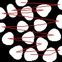

{kind=link}
| [mmframe] [Up] [mmtext] | |
| Copyright (c) 2003, Roberto A. Lotufo, UNICAMP-University of Campinas; Rubens C. Machado, CenPRA-Renato Archer Research Center. |
| [mmframe] [Up] [mmtext] | Image Creation |
Implemented in Python.
| f | Image Gray-scale (uint8 or uint16) or binary image. |
| data | Image Gray-scale (uint8 or uint16) or binary image.
vector of points. Each row gives information regarding a geometrical primitive. The interpretation of this data is dependent on the parameter GEOM. The line drawing algorithm is not invariant to image transposition. |
| value | Image Gray-scale (uint8 or uint16) or binary image.
pixel gray-scale value associated to each point in parameter data. It can be a column vector of values or a single value. |
| GEOM | String geometrical figure. One of 'point','line', 'rect', or 'frect' for drawing points, lines, rectangles or filled rectangles respectively. |
| y | Image Gray-scale (uint8 or uint16) or binary image.
|
mmdrawv creates the image
y by a superposition of points, rectangles and lines of gray-level
k1 on the image
f. The parameters for each geometrical primitive are defined by each line in the 'data' parameter. For
points, they are represented by a matrix where each row gives the point's row and column, in this order. For
lines, they are drawn with the same convention used by points, with a straight line connecting them in the order given by the
data matrix. For
rectangles and
filled rectangles, each row in the
data matrix gives the two points of the diagonal of the rectangle, where the points use the same row, column convention.
>>> f=uint8(zeros((3,5)))
>>> pcoords=uint16([[0,2,4],
[0,0,2]])
>>> pvalue=uint16([1,2,3])
>>> print mmdrawv(f,pcoords,pvalue,'point')
[[1 0 2 0 0] [0 0 0 0 0] [0 0 0 0 3]]
>>> print mmdrawv(f,pcoords,pvalue,'line')
[[1 1 2 0 0] [0 0 0 2 0] [0 0 0 0 2]]
>>> rectcoords=uint16([[0],
[0],
[3],
[2]])
>>> print mmdrawv(f,rectcoords, uint16(5), 'rect')
[[5 5 5 5 0] [5 0 0 5 0] [5 5 5 5 0]]
>>> f=mmreadgray('blob3.tif')
>>> pc=mmblob(mmlabel(f),'centroid','data')
>>> lines=mmdrawv(mmintersec(f,0),transpose(pc),uint8(1),'line')
Warning: Converting input image from int32 to binary uint8.
>>> mmshow(f,lines)
|  | |
| f,lines |
def mmdrawv(f, data, value, GEOM):
from Numeric import array, NewAxis, zeros, Int, put, ravel, arange, floor
from string import upper
GEOM = upper(GEOM)
data = array(data)
value = array(value)
y = array(f)
lin, col = data[1,:], data[0,:]
i = lin*f.shape[1] + col; i = i.astype(Int)
if len(f.shape) == 1: f = f[NewAxis,:]
if value.shape == (): value = value + zeros(lin.shape)
if len(lin) != len(value):
print 'Number of points must match n. of colors.'
return None
if GEOM == 'POINT':
put(ravel(y), i, value)
elif GEOM == 'LINE':
for k in range(len(value)-1):
delta = 1.*(lin[k+1]-lin[k])/(1e-10 + col[k+1]-col[k])
if abs(delta) <= 1:
if col[k] < col[k+1]: x_ = arange(col[k],col[k+1]+1)
else : x_ = arange(col[k+1],col[k]+1)
y_ = floor(delta*(x_-col[k]) + lin[k] + 0.5)
else:
if lin[k] < lin[k+1]: y_ = arange(lin[k],lin[k+1]+1)
else : y_ = arange(lin[k+1],lin[k]+1)
x_ = floor((y_-lin[k])/delta + col[k] + 0.5)
i_ = y_*f.shape[1] + x_; i_ = i_.astype(Int)
put(ravel(y), i_, value[k])
elif GEOM == 'RECT':
for k in range(data.shape[1]):
d = data[:,k]
x0,y0,x1,y1 = d[1],d[0],d[3],d[2]
y[x0:x1,y0] = value[k]
y[x0:x1,y1] = value[k]
y[x0,y0:y1] = value[k]
y[x1,y0:y1+1] = value[k]
elif GEOM == 'FRECT':
for k in range(data.shape[1]):
d = data[:,k]
x0,y0,x1,y1 = d[1],d[0],d[3],d[2]
y[x0:x1+1,y0:y1+1] = value[k]
else:
print "GEOM should be 'POINT', 'LINE', 'RECT', or 'FRECT'."
return y
| [mmframe] [Up] [mmtext] | |
| Copyright (c) 2003, Roberto A. Lotufo, UNICAMP-University of Campinas; Rubens C. Machado, CenPRA-Renato Archer Research Center. |